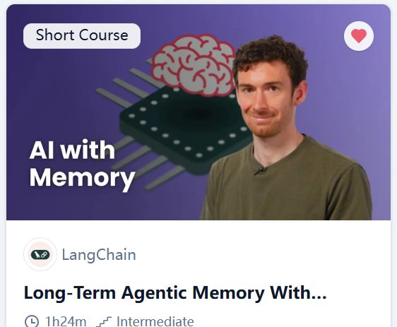
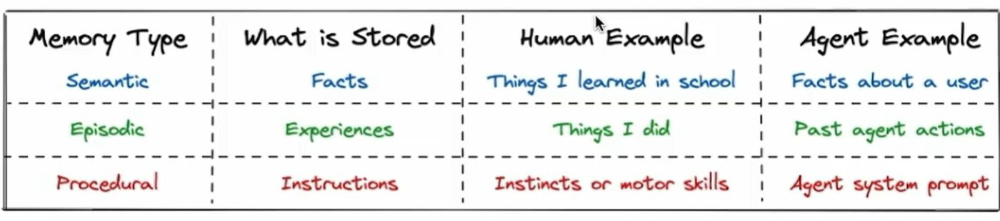

Learning Record 02
Long-Term Agentic Memory with LangGraph

网站：Long-Term Agentic Memory with LangGraph - DeepLearning.AI
收获
这一次是用LangGraph搭了一个email_Agent，用来对邮件进行分类（ignore / notify / respond）
核心主题是让这个Agent具有memery,课程教学中具体包含三重memery：
1.Semantic memory
2.Episodic memory

3.Procedural memory
感觉加上这些功能是一个自然的功能延申，在学习这些的过程中，更多地是熟悉了LangGraph的一些运用和Python的一些语法
评价：从第一个课程到这个课程的衔接还是比较自然的，不断用LangGraph搭不同Agent的过程也是挺有趣的
不足：主要还是通过运行演示代码来理解，但是自己还没有在本地跑过LangGraph，因此有很多具体流程还是不清楚，一些坑自己踩了才会对于模糊的地方有自己的理解
(似乎我之后上的一些课会更前置一些，但是在LLM的辅助下，顺序也不是大问题了，不懂的东西LLM基本都能给出解答，也希望我这种有点倒序的学法可以让我后续学习的时候，能感觉一些迷惑被拨云见日了)
(6/28回顾，基本差不多忘了......简单说一下就是semantic memery是存在store里的，Agent调用工具来写入/读取，episodic memory是通过examples的形式放在prompt里，让Agent知道自己之前做的行为，然后procedural memory，用轨迹加提示词优化器来优化prompt，但是其实这里的memory更新的过程除了第一个语义记忆，其他都是要人为干涉的，所以还不是很automated)